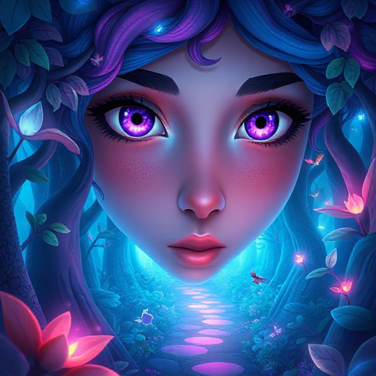

STORIE:🌲✨ "The Beautiful Forest That Breathed Magic" ✨🌲

come closer, and hush now…
Can you hear it? The soft rustling of leaves? The heartbeat of the earth beneath your feet?
Let me take you to a place where the wind hums lullabies, where trees lean in to listen, and where even the sun walks softly. 🌞🍃
There was once a forest — not ordinary, oh no.
This was the Forest of Liora — the most beautiful forest the world had ever known. 🌳🦋
It stretched like a green dream across the land.
The trees were tall and wise, with trunks carved by time and leaves that shimmered like emerald fire. ✨
The flowers sang when the moon rose, and the rivers laughed like children as they danced through the mossy paths. 🌸💧
But what made this forest truly special was not just how it looked…
It was how it felt.
When you entered Liora, the forest didn’t just watch you — it welcomed you.
Birds would fly near and guide you.
Butterflies would land on your hands like soft secrets.
Even the stones seemed to hum under your feet. 🕊️🌼
It was said that if your heart was pure, the forest would whisper your name in the wind. 🌬️
🌙 One day, a girl came to the forest…
Her name was Naira, and she was searching — not for treasure, not for fame, but for peace. 💫
The world outside had grown loud, heavy, full of rushing and rules.
She longed for stillness.
She longed to remember what it felt like to just be.
When she stepped beneath the green canopy, the air changed.
It smelled of rain and old magic.
The trees bowed gently as if to say, “We’ve been waiting for you.”
Naira walked deeper.
She saw animals without fear.
Flowers that only bloomed when she smiled.
A pond that showed her not just her face — but her spirit. 🌊
She stayed for hours… maybe days.
She listened.
She breathed.
And the forest — oh, the forest — healed her. 🌿❤️
When she finally stepped out, the world still rushed.
But Naira didn’t.
She carried the forest inside her now — its calm, its beauty, its slow and sacred breath.
🌠 Moral of the Story:
Sometimes the most beautiful places aren’t just made of trees and flowers — they are places that help you remember who you are.
Like the forest… you are allowed to be still, to grow slowly, and to bloom in your own time. 🌸🌳